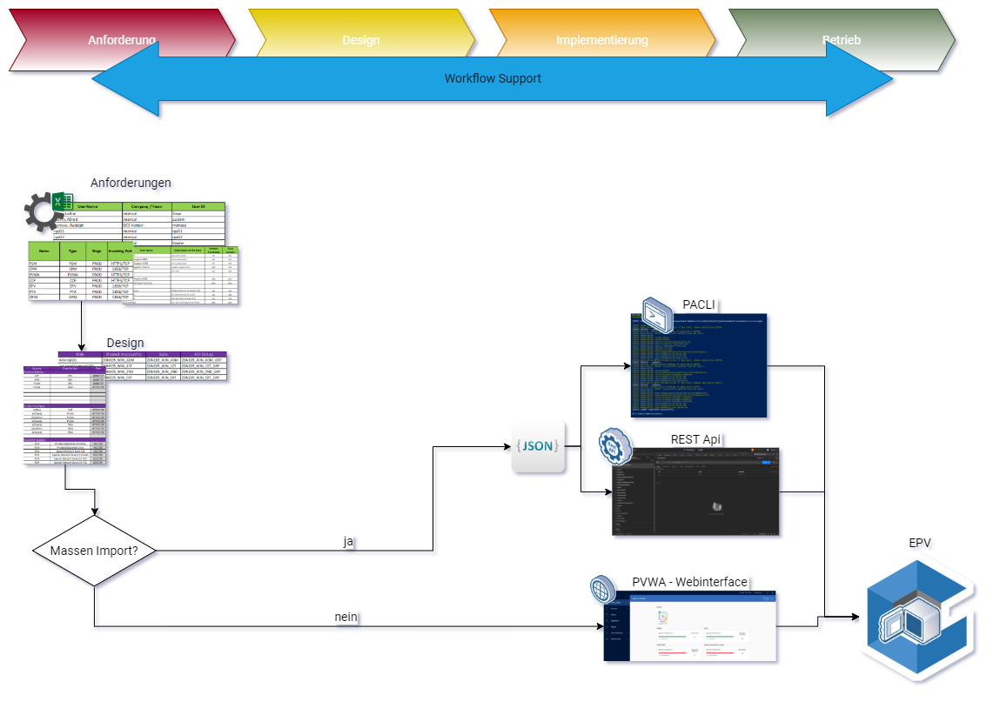
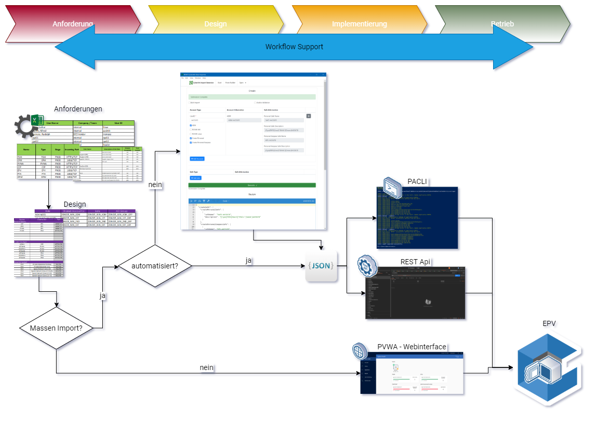
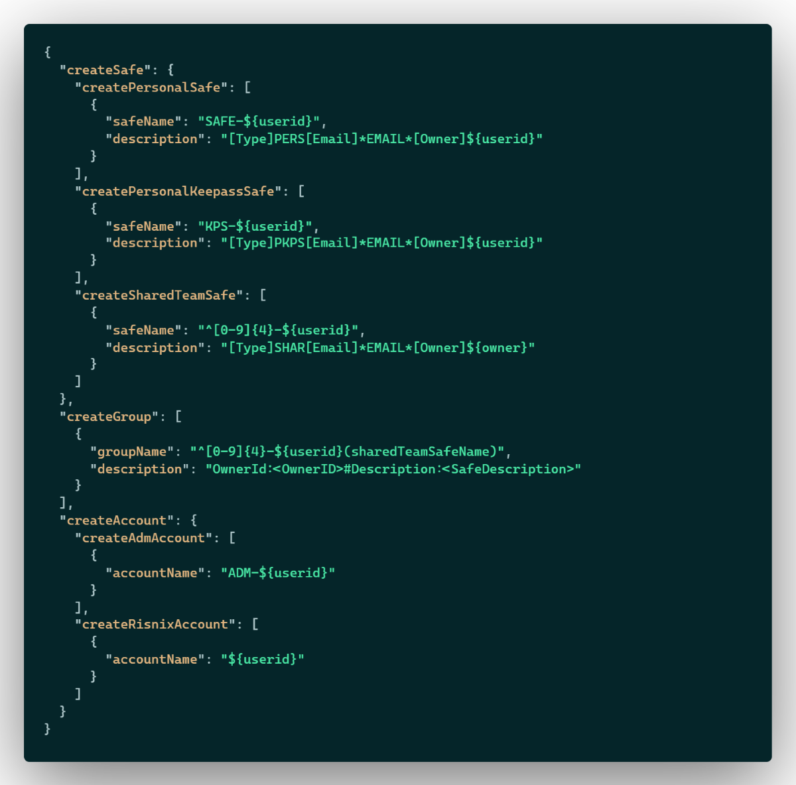
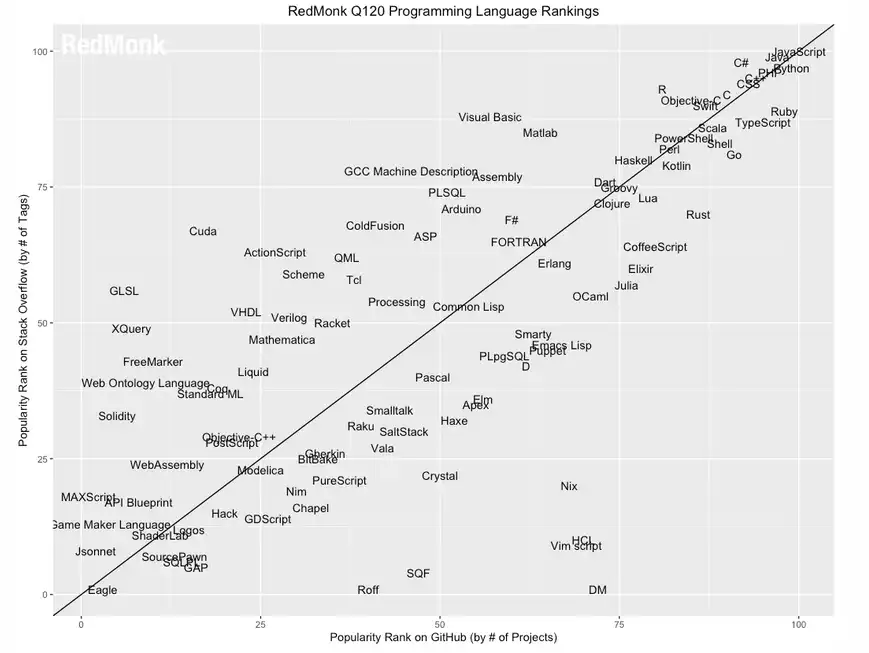
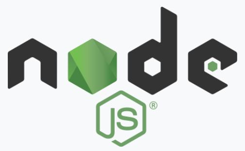
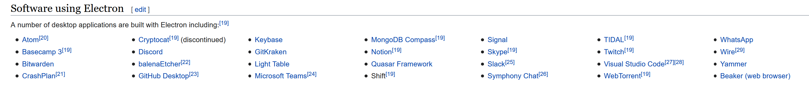
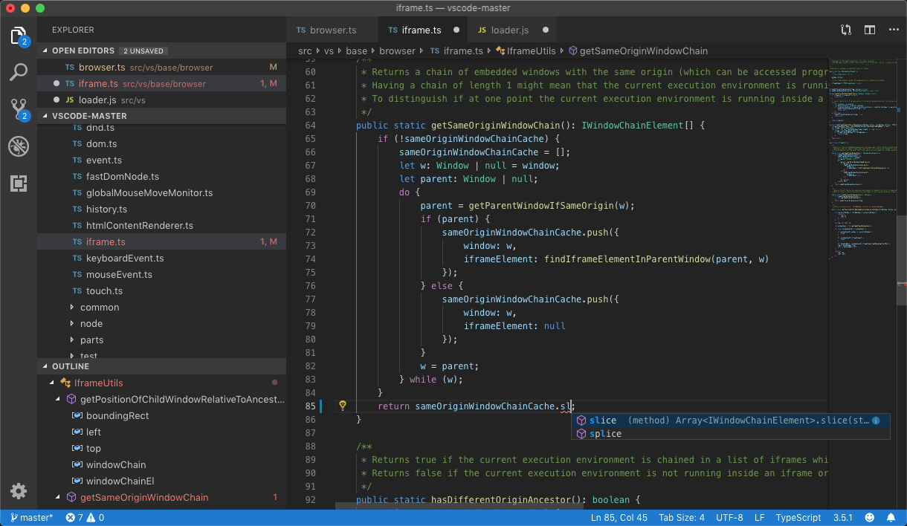

CyberArk Data Tool
Entwicklung einer cross-Plattform GUI mit Web Technologien
von Achim Hilker / PRO DV AG
Übersicht
- Hintergrund
- Anforderungen
- Technologische Auswahl
- Demo: Entwicklungsumgebung
- Demo: Das Ergebnis
- Zusammenfassung
Hintergrund
Problem

Lösung

Anforderungen
Anwender
-
intuitive Oberfläche
-
intuitive Bedienung
-
Hilfetexte
Administrator
-
anpassbar
-
konfigurierbar
-
Eingabevalidierung
Entwickler
-
Dokumentation
-
Entwicklungsumgebung
-
Automatisiert
Technologisch
-
zukunftssichere Technologien
-
Plattformübergreifend
-
Open Source
-
möglichst generisch
Datenquellen
-
CSV Datei PAS Exporter
-
Benutzereingaben
JSON Schema

technologische Auswahl
Programmiersprachen

HTML5

CSS3

JavaScript
Rangliste Programmiersprachen

Bibliotheken

node.js
-
asynchrone, event getriebene, JavaScript Laufzeitumgebung
-
“Serverseitiges JavaScript”
-
Open Source
-
OpenJS Foundation

electron.js
-
Webapplikationen für den Desktop
-
OpenJS Foundation
-
von vielen Open Source Projekten genutzt

formio.js
-
Form und Datamanagement Plattform
-
Form-Viewer und Form-Editor
-
Validierung
-
Konfiguration als Standardisierte JSON Datei
-
Open Source
-
Kommerzielles Unternehmen im Hintergrund
Entwicklungsumgebung
Editor

- Benutzerfreundliches Interface
- große Auswahl an Erweiterungen
- weit verbreitester Editor
- Open Source
- backed by Microsoft
Versionsverwaltung

-
Defacto Standard
-
schlank, einfach, schnell
-
großes Ecosystem
-
Open Source
Paketmanager
-
Node.js Paketverwaltung
-
großes Ecosystem
-
Open Source
DEMO
Die Entwicklungsumgebung
Das Program
Vielen dank für eure Aufmerksamkeit
Fragen
Anmerkungen